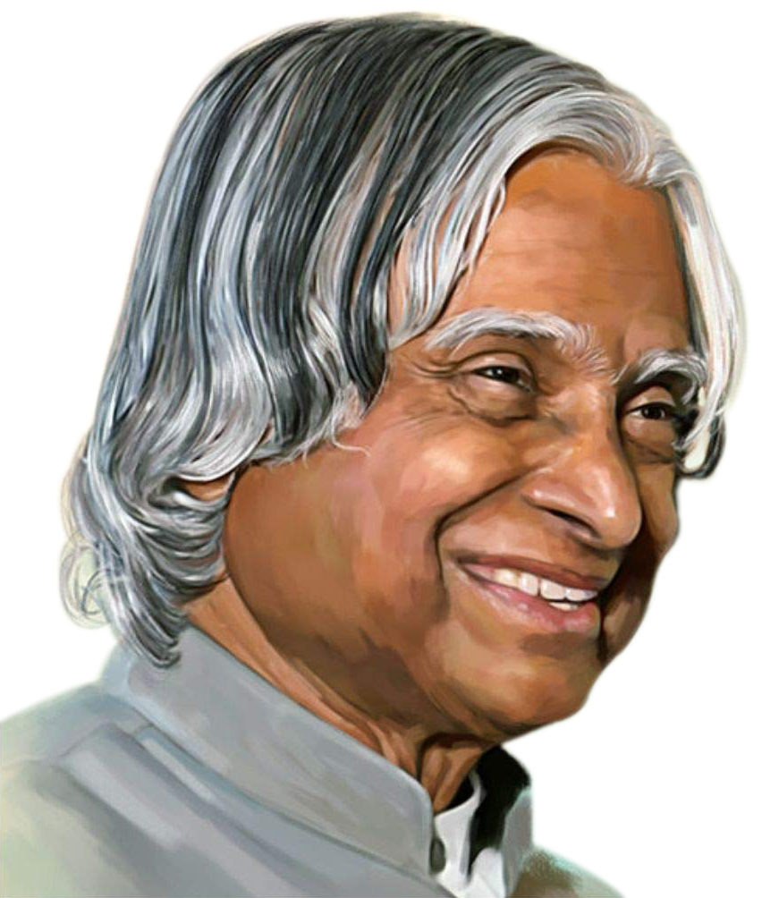

|  |
A. P. J. Abdul Kalam15 October 1931 - 27 July 2015 |
Avul Pakir Jainulabdeen Abdul Kalam (15 October 1931 - 27 July 2015) was an Indian aerospace scientist and statesman who served as the 11th president of India from 2002 to 2007. He was born and raised in Rameswaram, Tamil Nadu and studied physics and aerospace engineering. He spent the next four decades as a scientist and science administrator, mainly at the Defence Research and Development Organisation (DRDO) and Indian Space Research Organisation (ISRO) and was intimately involved in India's civilian space programme and military missile development efforts. He thus came to be known as the Missile Man of India for his work on the development of ballistic missile and launch vehicle technology. He also played a pivotal organisational, technical, and political role in India's Pokhran-II nuclear tests in 1998, the first since the original nuclear test by India in 1974.
Avul Pakir Jainulabdeen Abdul Kalam was born on 15 October 1931, to a Tamil Muslim family in the pilgrimage centre of Rameswaram on Pamban Island, then in the Madras Presidency and now in the State of Tamil Nadu. His father Jainulabdeen Marakayar was a boat owner and imam of a local mosque; his mother Ashiamma was a housewife. His father owned a ferry that took Hindu pilgrims back and forth between Rameswaram and the now uninhabited Dhanushkodi. Kalam was the youngest of four brothers and one sister in his family. His ancestors had been wealthy Marakayar traders and landowners, with numerous properties and large tracts of land. Marakayar are a Muslim ethnic group found in coastal Tamil Nadu and Sri Lanka who claim descent from Arab traders and local women. The family business had involved trading groceries between the mainland and the island and to and from Sri Lanka, as well as ferrying pilgrims between the mainland and Pamban. With the opening of the Pamban Bridge to the mainland in 1914, however, the businesses failed and the family fortune and properties were lost by the 1920s, apart from the ancestral home. The family was poverty-stricken by the time Kalam was born. As a young boy he had to sell newspapers to add to the family's meager income.
In his school years, Kalam had average grades but was described as a bright and hardworking student who had a strong desire to learn. He spent hours on his studies, especially mathematics. After completing his education at the Schwartz Higher Secondary School, Ramanathapuram, Kalam went on to attend Saint Joseph's College, Tiruchirappalli, then affiliated with the University of Madras, from where he graduated in physics in 1954. He moved to Madras in 1955 to study aerospace engineering in Madras Institute of Technology. While Kalam was working on a senior class project, the Dean was dissatisfied with his lack of progress and threatened to revoke his scholarship unless the project was finished within the next three days. Kalam met the deadline, impressing the Dean, who later said to him, "I was putting you under stress and asking you to meet a difficult deadline." He narrowly missed achieving his dream of becoming a fighter pilot, as he placed ninth in qualifiers, and only eight positions were available in the IAF.
After graduating from the Madras Institute of Technology in 1960, Kalam joined the Aeronautical Development Establishment of the Defence Research and Development Organisation (by Press Information Bureau, Government of India) as a scientist after becoming a member of the Defence Research & Development Service (DRDS). He started his career by designing a small hovercraft, but remained unconvinced by his choice of a job at DRDO. Kalam joined the INCOSPAR, working under Vikram Sarabhai, the renowned space scientist. He was interviewed and recruited into ISRO by H. G. S. Murthy, the first Director of Thumba Equatorial Rocket Launching Station (TERLS). In 1969, Kalam was transferred to the Indian Space Research Organisation (ISRO) where he was the project director of India's first Satellite Launch Vehicle (SLV-III) which successfully deployed the Rohini satellite in near-earth orbit in July 1980; Kalam had first started work on an expandable rocket project independently at DRDO in 1965. In 1969, Kalam received the government's approval and expanded the programme to include more engineers.
In 1963 to 1964, he visited NASA's Langley Research Center in Hampton, Virginia; Goddard Space Flight Center in Greenbelt, Maryland; and Wallops Flight Facility. Between the 1970s and 1990s, Kalam made an effort to develop the Polar Satellite Launch Vehicle (PSLV) and SLV-III projects, both of which proved to be successful.
Kalam served as the 11th president of India, succeeding K. R. Narayanan. He won the 2002 presidential election with an electoral vote of 922,884, surpassing the 107,366 votes won by Lakshmi Sahgal. His term lasted from 25 July 2002, to 25 July 2007.
On 10 June 2002, the National Democratic Alliance (NDA) which was in power at the time, expressed that they would nominate Kalam for the post of President, and both the Samajwadi Party and the Nationalist Congress Party backed his candidacy. After the Samajwadi Party announced its support for Kalam, Narayanan chose not to seek a second term in office, leaving the field clear. Kalam said of the announcement of his candidature:
I am really overwhelmed. Everywhere both in Internet and in other media, I have been asked for a message. I was thinking what message I can give to the people of the country at this juncture.
On 18 June, Kalam filed his nomination papers in the Indian Parliament, accompanied by Vajpayee and his senior Cabinet colleagues.
The polling for the presidential election began on 15 July 2002, in Parliament and the state assemblies, with the media claiming that the election was a one-sided affair and Kalam's victory was a foregone conclusion; the count was held on 18 July. Kalam became the 11th president of the Republic of India in an easy victory, and moved into the Rashtrapati Bhavan after he was sworn in on 25 July. Kalam was the third President of India to have been honoured with a Bharat Ratna, India's highest civilian honour, before becoming the President Sarvepalli Radhakrishnan (1954) and Zakir Hussain (1963) were the earlier recipients of Bharat Ratna who later became the President of India. He was also the first scientist and the first bachelor to occupy Rashtrapati Bhawan.
After leaving office, Kalam became a visiting professor at the Indian Institute of Management Shillong, the Indian Institute of Management Ahmedabad, and the Indian Institute of Management Indore; an honorary fellow of Indian Institute of Science, Bangalore; chancellor of the Indian Institute of Space Science and Technology Thiruvananthapuram; professor of Aerospace Engineering at Anna University; and an adjunct at many other academic and research institutions across India. He taught information technology at the International Institute of Information Technology, Hyderabad, and technology at Banaras Hindu University and Anna University.
In 2011, Kalam was criticised by civil groups over his stand on the Koodankulam Nuclear Power Plant; he supported the
establishment of the nuclear power plant and was accused of not speaking with the local people. The protesters were
hostile to his visit as they saw him as a pro-nuclear scientist and were unimpressed by the assurances he provided
regarding the safety features of the plant.
In May 2012, Kalam launched a programme for the youth of India called the What Can I Give Movement, with a central theme
of defeating corruption.
On 27 July 2015, Kalam travelled to Shillong to deliver a lecture on "Creating a Livable Planet Earth" at the Indian Institute of Management Shillong. While climbing a flight of stairs, he experienced some discomfort, but was able to enter the auditorium after a brief rest. At around 6:35 p.m. IST, only five minutes into his lecture, he collapsed. He was rushed to the nearby Bethany Hospital in a critical condition; upon arrival, he lacked a pulse or any other signs of life. Despite being placed in the intensive care unit, Kalam was confirmed dead of a sudden cardiac arrest at 7:45 p.m. IST. His last words, to his aide Srijan Pal Singh, were reportedly: "Funny guy! Are you doing well?"